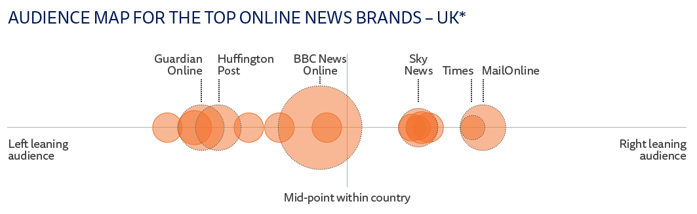

Chinna Subbaraya Siddharth (Sid) Ramavajjala (ramavajjala@wisc.edu) a, Ramakrishna Raju Gangaraju (grk.gangaraju@wisc.edu) a
a - Department of Geography, University of Wisconsin - Madison, USA
Introduction:
What is political polarization?
- Political polarization is the divergence of individual attitudes from a central point towards extreme edges (far right or far left). The idea of polarization keeps changing based on context and country. For instance, In the United States (US), polarization is used for assessment of candidates ideologies with respect to amount of influence they wield on the voters. Due to two-party system ( Democrat Vs. Republican ) in the US, political polarization is widely studied. As a result, the bulk of literature quantifying the qualitative information of opinions is produced in the US.[1] In the United Kingdom (UK), polarization is used to assess policy acceptance rate and predict trends when a referendum is passed.
Image by Ari Kittrie from The Lion's Tale
How political polarization is measured?
- However, political polarization is measured on qualitative information either collected from survey data or a questionnaire . The questionnaire consists of set of statements for which the participants have to select one opinion from the following strongly agree, agree, neither agree nor disagree, disagree, strongly agree . Therefore, each opinion is encoded with values in the form of a diverging scale. Following encoding, the sentiments are investigated using statistical models. The following graphic depicts how favorite media and their target audience changes based on political polarization.

Image by Richard Fletcher, Senior Research Fellow, Reuters Institute
Why measure it?
- Political Polarization is associated with social tensions, policy uncertainity, economic fluctuations, low economic growth rates.[1] Therefore, it is important to measure polarization as it might lead to public unrest, riots, public property damages, mistrust on policies. The conceptualization for Polaris Lab UK is motivated from the paper titled "Political Polarization in the UK: Measures and socio-economic correlates" by Daryna Grechyna.[1]
Image by European center for populism studies
Data:
- Data is downloaded from the UK data service portal. The interactive map is designed on British Household Panel Survey (BHPS) data collected from 1991 – 2009. Each year is referred to as a "wave" And data starts from Wave 1 (1991) and ends with Wave 18 (2009). Our analysis is focued on three years of data - 1995, 2000, 2004, as they contain survey for same statements, which is referred as "study period". We have capitalized our analysis based on one column which has spatial information. For more on data processing and analysis using Python, please refer our GitHub
Methods and Analysis:
- Grechyna (2022) applied normalizations to derive values for potential determinants of political polarization[1]. The variables used as part of analysis are :
- Standard Deviation of Age : Standard deviation of age by region.
- Native Share Variability : Share of non-applicable count in a region to total count is computed for each region.
- Education Variability : Each respondent's education is encoded to a value based on documentation provided by BHPS. And their share is calculated based on dissimilarity index for each region.
- Job Variability: Each respondent's job is encoded to a value based on documentation provided by BHPS. And their share is calculated based on dissimilarity index for each region.
- Fraction of Employed: Count of full-time employed to total count in each region
- Median Income: Median income in Pounds is computed for each region
- Gini Index of Income Inequality: From income, Gini index is computed for each region.
Therefore, trends and correlates are evaluated on a regional basis (group by "region" is applied) - Dissimilarity Index and Gini Index of income inequality are used to distribute weights of each group type.
- The political polarization measured in our study is based on three statements (S1, S2, S3) spread across study years (1995, 2000, 2004). Meaning, opinions on the same set of statements are recorded for each year in study years.[1]
- Statement 1: “Private enterprise is the best way to solve Britain’s economic problems.”
- Statement 2: “Major public services and industries ought to be in state ownership.”
- Statement 3: “It is the government’s responsibility to provide a job for everyone who wants one.”
- Furthermore, the political climate is analyzed and calculated by adopting three calculations: (The following are simplified meanings of each method and true definitions vary)
- Lindqvist and Ostling (2010): The variance of encoded opinions is calculated for each region to understand the deviation and distribution of opinions for each statement. Therefore, it calculates variance of opinions.[2]

- Abramowitz and Saunders (2008): Calculated based on ideological distances of encoded opinions for each region, i.e., performing a mean using the absolute sum of values for each statement.[3]

- Duca and Saving (2016): Calculated based on effective antagonisms across different social groups, i.e., computing the share of each group (weight calculations) and multiplying the share against squares of every other group with encoded opinion value for each region.[4]

Only valid opinions are considered and are encoded as {Strongly agree: 2, Agree: 1, Neither agree nor disagree: 0, Disagree: -1, Strongly Disagree: -2}. For more understanding of formulas displayed, please refer to the paper in references section. Moreover, from animation below, it is evident that share of milder opinions reduced but stronger opinions stayed consistent.Hence, there is huge scope to explore and understand driving forces that alter opinions.

Frequency of encoded opinions over study period for statements 1,2,3.
Interpretation guide:
-
The values are hard to interpret and often lead to confusion. For more comprehensive understanding let us consider two scenarios: (For more context, you are encouraged to read introduction)
- Scenario 1: Duca Saving S3 in 1995 for London is 3.20
- Scenario 2: Duca Saving S3 in 2004 for London is 9.33
- Lindqvist Ostling, Abramowitz Saunders, Duca Saving : A higher value indicates more opinions among the population, thus more polarization.
- Standard Deviation of Age : A larger value indicates more spread of age spectrum, while a smaller value suggests concentration of age.
- Native Share Variability : A larger value suggests presence of more UK citizens (~ more natives = less polarization).
- Education Variability : A higher value indicates a greater diversity in education backgrounds of population, while a lower suggests more uniform level of education.
- Job Variability: A larger value indicates a higher diversity in range of jobs undertaken thus leading to more polarization (~ higher job variability = more inequality).
- Fraction of Employed: A higher value indicates a higher employment and vice versa (~ more employment = less polarization).
- Median Income: A higher value indicates a higer income and vice versa.
- Gini Index of Income Inequality: It lies between [0,1].
0
suggests there is highest inequality, while1
suggests a highest equality.
Scenario 2 has more polarized population in comparison to scenario 1 ( But why? ). As part of our analysis, each opinion for a surveyed statement is encoded between range of [-2,2], where a strong agreement is 2 and strong disgareement is -2. If more people opt for "neither agree nor disagree" (Encoded zero for a neutral opinion). Then outcome of Duca Saving would be low. In contrast, if more people have diversified opinions, then Duca Saving is higher. Thus, a higher polarization (more people are opinionated and have stronger sentiments either right or left).
Results & discussions:


Encoded opinions for statement 3 distribution over time, Encoded opinions distribution for statement 3 over time by each UK region for study period.

Correlation between different variables over study period.
-
Three polarization measures are correlated to an extent (about 80%) for study period. Major trends are: there is a positive correlation between political polarization with job status variability. There is a negative correlation between polarization with an increase in employment rate and the share of natives.
-
Interestingly, job status variability and education variability are strongly positively correlated in the analyzed years. From this, we can understand there are fewer indivudual with entrepreneurship capabilities or lower encouragement from the government for entrepreneurship.
- We have also performed Local Moran’s I for Duca Savings based on statement 3 and Fraction of employed:


Local Moran's I based on Duca Savings for statement 3 and Fraction of employed
References :
- Grechyna, D. Political polarization in the UK: measures and socio-economic correlates. Const Polit Econ (2022). https://doi.org/10.1007/s10602-022-09368-8
- Lindqvist, E., & Östling, R. (2010). Political polarization and the size of government. American Political Science Review, 104(3), 543–565.
- Abramowitz, A. I., & Saunders, Kyle L. (2008). Is polarization a myth? The Journal of Politics, 70(2), 542–555.
- Duca, J. V., & Saving, J. L. (2016). Income inequality and political polarization: Time series evidence over nine decades. Review of Income and Wealth, 62(3), 445–466.
Credits :
We extend our sincere thanks and regards to Professor Rob Roth for designing and teaching the course Geog 575: Interactive Cartography and Geovisualization. This project enabled us to apply several concepts related to Map User Interface (UI)/ User Experience (UX). A solid amount of theory is adopted from lecture modules like: wireframing, UX design, user-centered design (UCD) in designing and forging of the interactive map product.
We convey our heart felt thanks to Gareth-Baldrica Franklin (Teaching Assistant) for being always available and helping us throughout in debugging several parts of code, acting as mentor, help us stay within deadlines of submission
We thank Professor Daryna Grechyna , University of Grenada, Spain for guiding with fundamentals of data acquisition and letting us use her paper for our project.
Cartographers :
Designed by Chinna Subbaraya Siddharth (Sid) Ramavajjala and Ramakrishna Raju Gangaraju. Please check out our other map works by clicking on hyperlinked names.